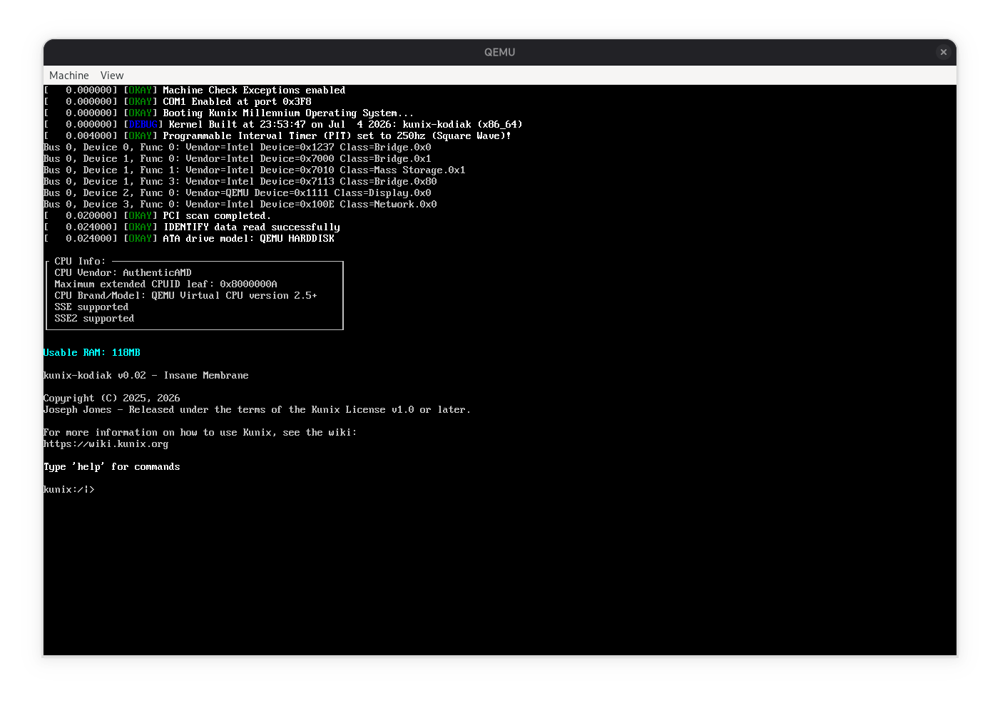

time_t can count is
2147483647. The next one is 1901.
Free. From Scratch.
The Klondike Software Project (KSP) is an umbrella libre software initiative building operating systems, artificial intelligence, and tools from first principles. Every line of code is free software, written to be read, understood, and owned by its users.

Latest News
2026.07.14: KMOS development snapshot
The road to ring 3 continues. This month's work focuses on the userspace foundation: the ELF loader, the syscall interface, and the scheduler. Key highlights:
- kernel: ELF64 loader parses program headers and maps segments
- kernel: initial syscall interface via
syscall/sysret - sched: round-robin scheduler with per-task kernel stacks
- fs: FAT32 driver reads long file names and subdirectories
- shell: new
lsandcatcommands backed by the FAT32 driver - mm: page fault handler reports faulting address and error code
2026.07.15: NMAI is now OpenCerebral
New Millennium Artificial Intelligence has been renamed OpenCerebral. The division, its models, and its maintainers are unchanged — only the name is new. Seventeen models are now published under the Apache License 2.0, including the Boris family of GPT-2 text models at 75M, 125M, and 250M parameters, and littlerock-1M. All of them were trained from scratch on a single RTX 3060. Follow progress at oc.kunix.org.
Projects at a Glance
| Project | What it is | License |
|---|---|---|
| KMOS | Monolithic x86_64 kernel in C | Kunix License |
| OpenCerebral | Language models trained from scratch | Apache 2.0 |
KSP software is licensed under the Kunix License and the Klondike Public License family. We believe software freedom is not a feature — it is the point.